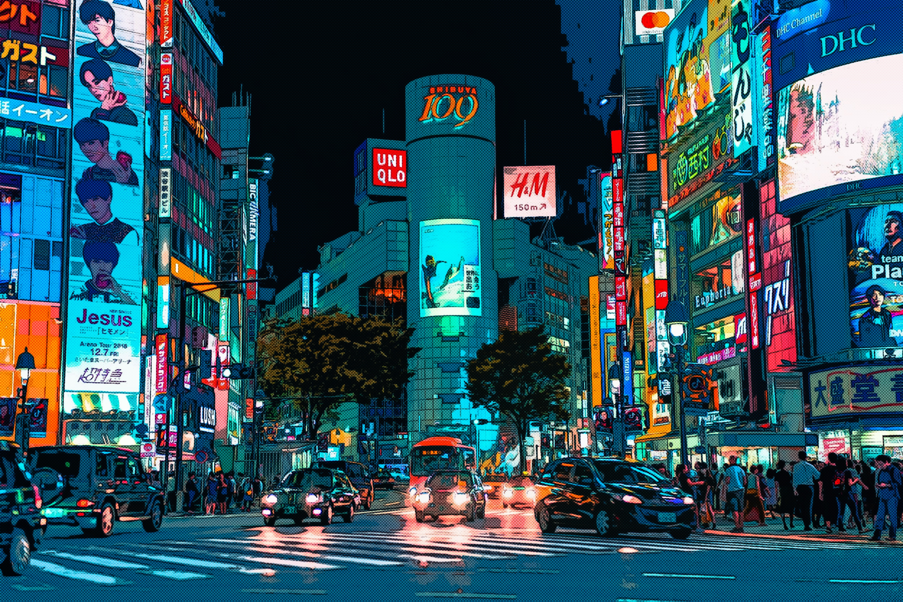
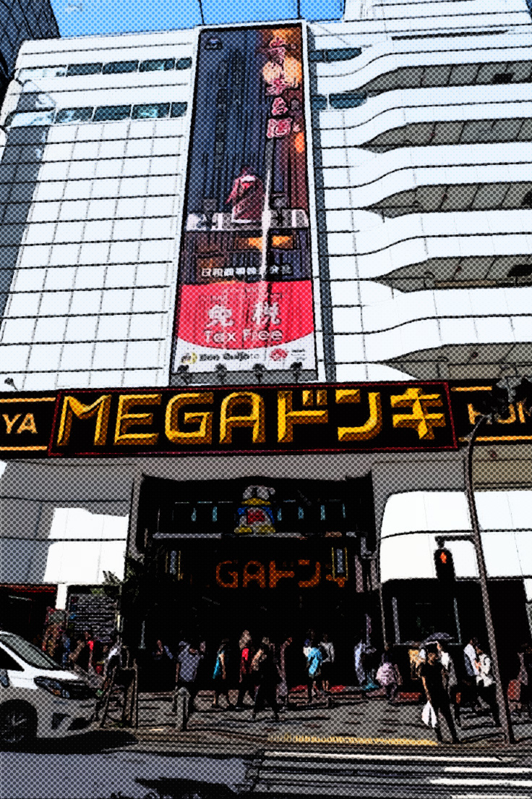
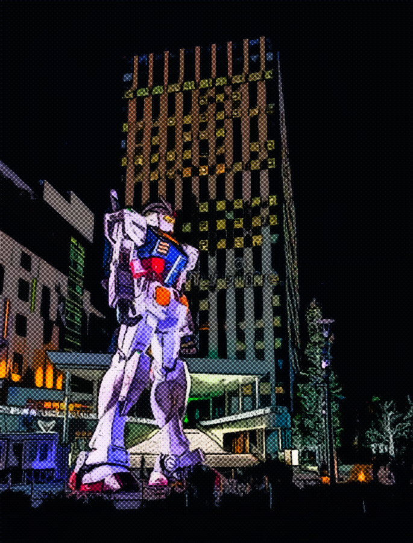
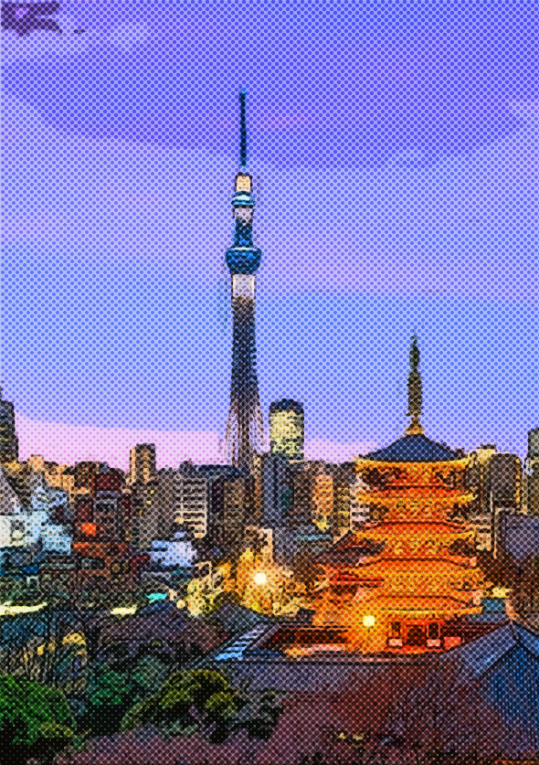
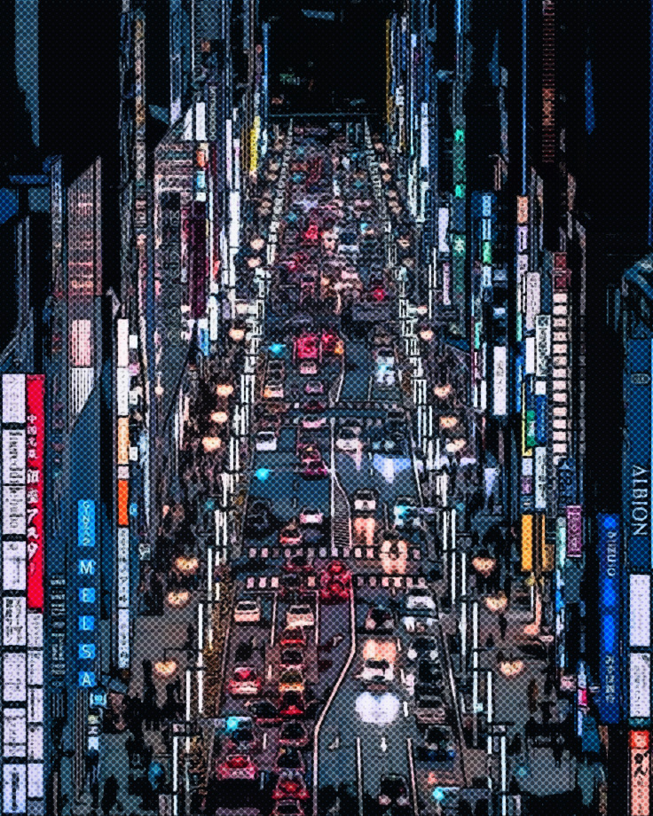

Home to perhaps one of, if not the most famous cross walks in the world, partially due to a scene in Fast & the Furious Tokyo Drift, Shibuya also boasts endless areas for shopping and is also home to tons of niche restaurants. Shibuya is also a train hub, so if desired, much adventure can be planned by figuring out how far from Shibuya a certain destination might be.
Tip: There aren't too many trash cans around, even in some of the busiest places, like Shibuya, so make sure you leave room for a small bag in your backpack.

If you're looking for a niche place to go shopping for nothing particular in mind, or absolutely anything in mind, Don Quijote has a massive variety of almost anything you can imagine. If you want the "full" experience, make sure to visit the one in Shibuya.
Don't feel TOO ashamed if you slightly lean onto someone on the train. It's much more common, as trains can get very packed.

Odaiba, one of the more laid back areas to visit, is home to a fairly large shopping center as well as a giganitc Gundam statue. If that's not enough, near Odaiba is the Rainbow Bridge and as well as a water-side walkways for a stroll.
Do NOT take a taxi if you can avoid doing so, even for short trips. Save that cash for the fun stuff.

You might know how big Japan is comparitively to other major cities, but you won't be able to TRULY understand and say that you do until you have taken the chance to visit the top of the Tokyo Skytree. Once at the top you can see for MILES and MILES. The Skytree is 634 meters tall. Tickets can be purchased at the bottom of the Skytree, where there is also a gift shop.
Skytree
Make sure to always bring cash, as Japan is a cash based society.

While Ginza isn't the most popular tourist destinations in terms of sightseeing, if you want a chance to splurge a bit and live more on the lavish side of things, Ginza is home to plenty of high end boutiques.
Make sure you know your train's schedule, specifically what time it stops running and where. You don't want to get stranded and have to take a cab...god forbid...